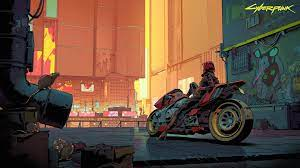
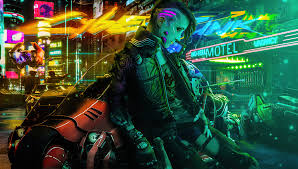
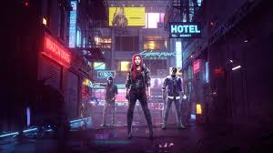

Cyberpunk 2077 is an open-world, action-adventure
story set in Night City, a megalopolis obsessed with power, glamour and
body modification. You play as V, a mercenary outlaw going after a
one-of-a-kind implant that is the key to immortality. You can customize
your character’s cyberware, skillset and playstyle, and explore a vast
city where the choices you make shape the story and the world around
you.

Enter the massive open world of Night City, a place that sets new
standards in terms of visuals, complexity and dept. Make deals with
sleazy fixers, desperate celebrities, and renegade artificial
intelligences — all fighting tooth and nail to make it big in Night
City. Make choices in your journey and watch the story change based on
your actions.
Venture into a larger-than-life city, explore gang-controlled war zones, trade in the tumultuous city center and invade corporate properties.
Trading with shrewd channels, desperate celebrities and rebellious artificial intelligences — all while fighting with all the guts you have to be someone in Night City.
Make decisions on your journey and watch the story change based on your actions.

Take the riskiest job of your life and go after a prototype implant that
is the key to immortality. Push yourself to the absolute limit to get
your hands on Night City’s most valuable implant — a prototype chip that
can make you live forever. Face corporate leaders, underground hustlers,
and all of the most feared people in Night City — those who will do
everything in their power to possess the prototype chip. Choose how to
handle this enormous power and who you wish to become.